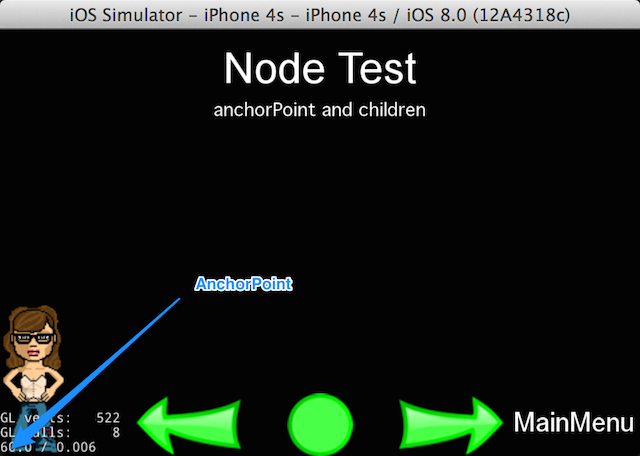
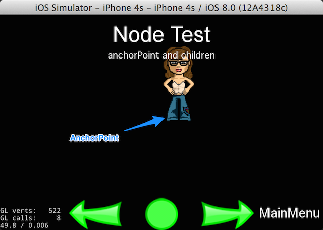
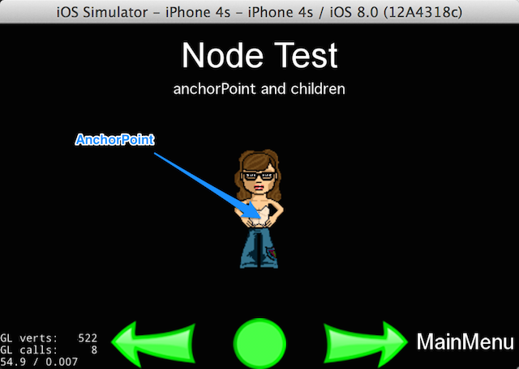
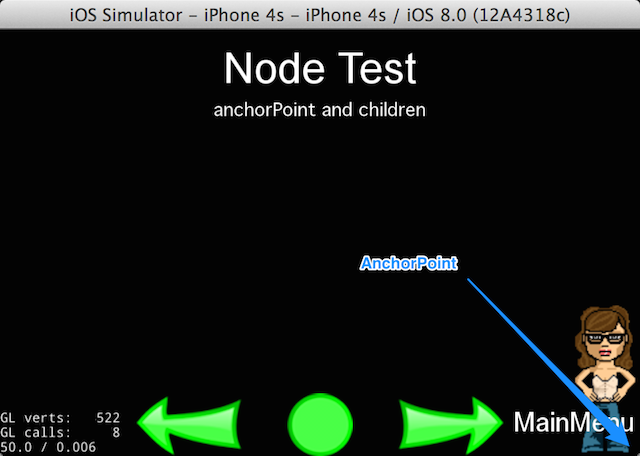

在Cocos2d-x中，定义一个Node元素的位置，一般要设定两个参数：AnchorPoint与Position。那么这两个点的作用分别是什么，他们是如何来确定一个Node元素的位置呢？
当我们想把一个Node元素放置到场景或者层中时，如何定义他的位置？
由于元素为一个平面，那么可以通过这个面中的一个点来决定这个平面的位置。
那么在设定时，首先要设定以哪个点为基准（AnchorPoint），然后再设定放置这个点（AnchorPoint）的具体坐标（Position）。
AnchorPoint（锚点）
AnchorPoint被称为锚点，也就是用来确定元素位置的基准点（原点）。简单来理解，假如我们用钉子将一张纸钉在墙上，那么钉子钉入的点就是AnchorPoint。我们在设定一个元素的Position坐标时，实际上是将AnchorPoint放置在相应的坐标上，之后就能确定整个元素的位置了。
关于锚点，我们需要知道：
- 锚点的两个值(x,x)的取值范围均在0~1。因为这两个点不是具体数值，而是一个乘数因子。如果为(0,0)，则表示元素的左下角；如果为(1,1)，则表示元素的右上角；如果为(0.3,0.8)，则在元素中(宽 * 0.3，高 * 0.8)的位置上。
- Layer的AnchorPoint默认为(0,0)，其他Node的默认值为(0.5,0.5)。
当我尝试将Layer的AnchorPoint尝试设为其他位置时，会发现不起作用。因为Layer的 ignoreAnchorPointForPosition属性设为 true，这样他的AnchorPoint就将固定为(0,0)，我们需要将ignoreAnchorPointForPosition设为 false后，再设置Layer的AnchorPoint才能生效。
layer->ignoreAnchorPointForPosition(false);
Position（位置）
有了AnchorPoint的概念，Position就不用过多解释了。Position的设定实质是设置AnchorPoint在坐标系中的位置。确定了AnchorPoint与Position，实际上就确定了元素在坐标系中的位置。关于坐标系位置更详细的解析，可参见[Cocos2d-x v3.x官方文档修订版]Cocos2d-x 3.x坐标系详解。
中点计算公式
明白了AnchorPoint与Position的概念，我们就可以推导出任何一个元素（非Layer）的中点(middlePointX,middlePointY)计算公式。
middlePointX = position.x + node.width * (0.5 - anchorPoint.x);
middlePointY = position.y + node.height * (0.5 - anchorPoint.y);
Demo
有了上面的结论，我们可以用几个例子来进行演示。
下面的例子均使用官方的TestDemo中 Node::Node 部分的 Test2 修改而成，可以在官方Test工程中的NodeTest/NodeTest.cpp中找到原代码。
将元素放置在左下角
将AnchorPoint与Position都设为(0,0)，则元素就在屏幕左下角。
auto s = Director::getInstance()->getWinSize();
auto sp1 = Sprite::create(s_pathSister1);
sp1->setAnchorPoint(Point(0, 0));
sp1->setPosition(Point(0, 0));
addChild(sp1);

将元素放置在中间（1）
AnchorPoint仍为(0,0)，将Position设为屏幕中点，可以看到元素并不是完全在中点，真正在中点的是人物的脚。
auto s = Director::getInstance()->getWinSize();
auto sp1 = Sprite::create(s_pathSister1);
sp1->setAnchorPoint(Point(0, 0));
sp1->setPosition(Point(s.width / 2, s.height / 2));
addChild(sp1);

将元素放置在中间（2）
AnchorPoint设为了元素中点(0.5,0.5)，Position设为屏幕中点，这回是真正的在屏幕的中点了。
auto s = Director::getInstance()->getWinSize();
auto sp1 = Sprite::create(s_pathSister1);
sp1->setAnchorPoint(Point(0.5, 0.5));
sp1->setPosition(Point(s.width / 2, s.height / 2));
addChild(sp1);

将元素放置在右下角
将AnchorPoint设在Node元素的右下角(1,0)，Position也设为右下角(1,0)，那元素就会出现在屏幕的右下角。
auto s = Director::getInstance()->getWinSize();
auto sp1 = Sprite::create(s_pathSister1);
sp1->setAnchorPoint(Point(1, 0));
sp1->setPosition(Point(s.width, 0));
addChild(sp1);

本文由金同尧原创，首发于JinTongYao’s blog，转载请注明出处。